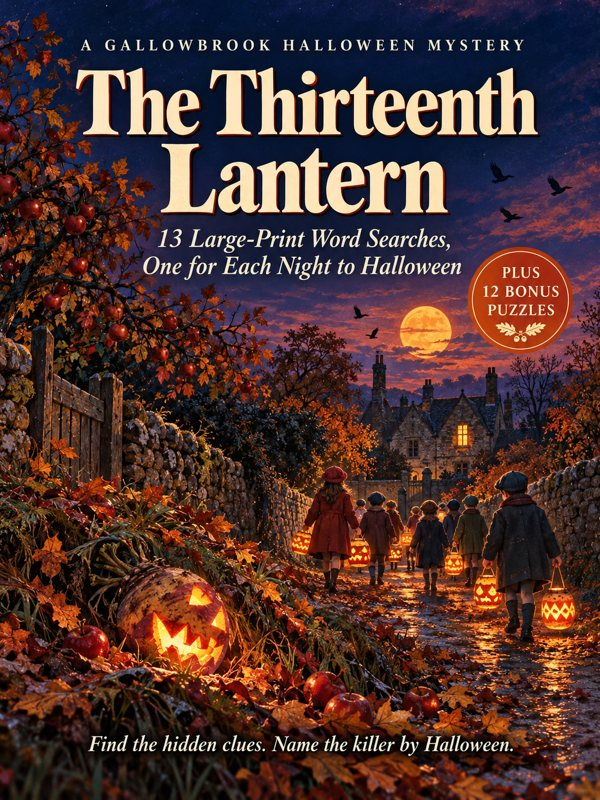
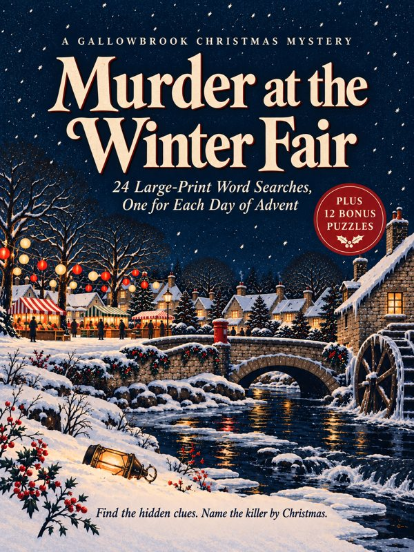
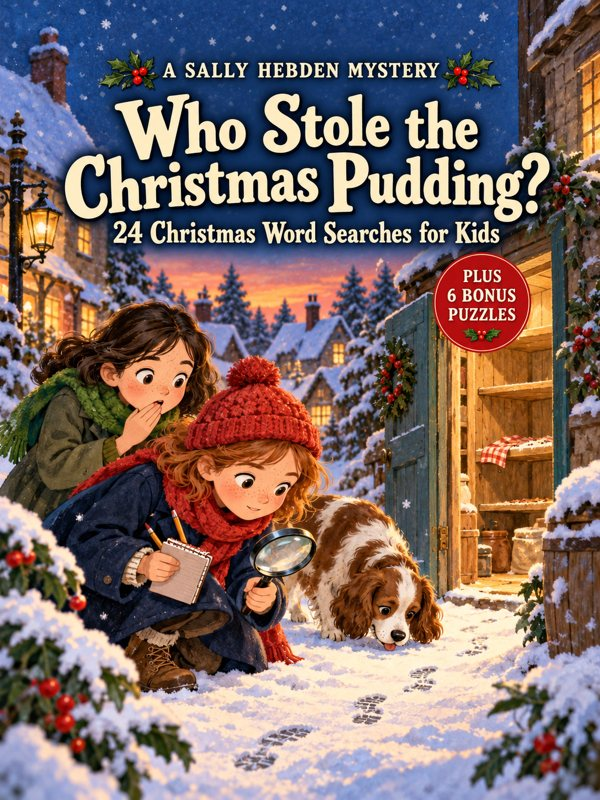

The Thirteenth Lantern
A Halloween mystery in 13 large-print word searches. October 1954.
Answers are in the back of the book.
A small English village in the 1950s where the post office knows everyone's business, and a surprising number of people come to a sticky end. Each book is a mystery you solve yourself, one puzzle at a time.

A Halloween mystery in 13 large-print word searches. October 1954.
Answers are in the back of the book.

A Christmas mystery in 24 large-print word searches, one for each day of Advent. December 1954.
Answers are in the back of the book.

A Sally Hebden mystery for kids aged 7 to 11, in 24 Christmas word searches.
Answers are in the back of the book.
If you think you've found a mistake in a puzzle, check the book's clarifications here first. Every grid and every clue is checked twice before printing, by machine and by hand. If something still slipped through, the fix will be listed on its page.